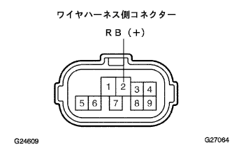
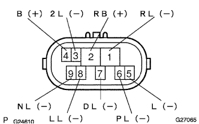

電子制御式オートマチツクトランスアクスル［ECT］システム（U340F） ニュートラルスタートスイッチASSY系統 |
| 手順1 | TaSCANデータ読み取り（シフトポジションSW） |
SST(TaSCAN)を使用して、画面表示に従って操作を行ない、[ECUデータモニター]画面を表示させコンピュータデータを点検する。
| 項目名[記号] | 項目解説 | 点検条件 | 参考値 | 異常時の点検項目 |
|---|---|---|---|---|
| シフトポジションSW Rレンジ[R] | Rレンジを表す | シフトレバーN→R | OFF→ON | ニュートラルスタートスイッチ(R)信号 |
| シフトポジションSW 2レンジ[2] | 2レンジを表す | シフトレバーN→２ | OFF→ON | ニュートラルスタートスイッチ(2)信号 |
| シフトポジションSW Lレンジ[L] | Lレンジを表す | シフトレバーN→L | OFF→ON | ニュートラルスタートスイッチ(L)信号 |
| シフトポジションSW Dレンジ[D] | Dレンジを表す | シフトレバーN→D | OFF→ON | ニュートラルスタートスイッチ(D)信号 |
|
| ||||
| NG | |
| 手順2 | ワイヤハーネスまたはコネクター点検（電源系統） |
ニュートラルスタートスイッチASSYのコネクターを切り離す。
|  |
イグニッションスイッチをONにし、SST(トヨタエレクトリカルテスター)を使用して、端子間の電圧を点検する。
| 端子番号(端子記号) | 電圧[V] |
|---|---|
| 2(RB)←→ボデーアース | 7.5-14 |
|
| ||||
| OK | |
| 手順3 | ニュートラルスタート スイッチASSY単体点検 |
ニュートラルスタートスイッチASSYのコネクターを切り離す。
|  |
SST(トヨタエレクトリカルテスター)を使用して、各端子間の導通を点検する。
| シフト位置 | 端子番号(端子記号) | 導通 |
|---|---|---|
| Pレンジ | 6(PL)←→2(RB) | 導通あり |
| Pレンジ | 5(L)←→4(B) | 導通あり |
| Rレンジ | 1(RL)←→2(RB) | 導通あり |
| Nレンジ | 9(NL)←→2(RB) | 導通あり |
| Nレンジ | 5(L)←→4(B) | 導通あり |
| Dレンジ | 7(DL)←→2(RB) | 導通あり |
| 2レンジ | 3(2L)←→2(RB) | 導通あり |
| Lレンジ | 8(LL)←→2(RB) | 導通あり |
|
| ||||
| OK | |
| 手順4 | ワイヤハーネスまたはコネクター点検（ニュートラルスタートスイッチASSY-エンジンコントロールコンピュータ） |
ニュートラルスタートスイッチASSYのコネクターを接続する。
エンジンコントロールコンピュータのコネクターCを切り離す。(端子配列は参照)
イグニッションスイッチをONにし、SST(トヨタエレクトリカルテスター)を使用して、各端子間の電圧を点検する。
| シフト位置 | 端子番号(端子記号) | 電圧[V] |
|---|---|---|
| Rレンジ | C11(R)←→B7(E1) | 7.5-14 |
| Rレンジ以外 | C11(R)←→B7(E1) | 0-1.5 |
| Dレンジ | C10(D)←→B7(E1) | 7.5-14 |
| Dレンジ以外 | C10(D)←→B7(E1) | 0-1.5 |
| 2レンジ | C9(2)←→B7(E1) | 7.5-14 |
| 2レンジ以外 | C9(2)←→B7(E1) | 0-1.5 |
| Lレンジ | C8(L)←→B7(E1) | 7.5-14 |
| Lレンジ以外 | C8(L)←→B7(E1) | 0-1.5 |
|
| ||||
| OK | ||
| ||